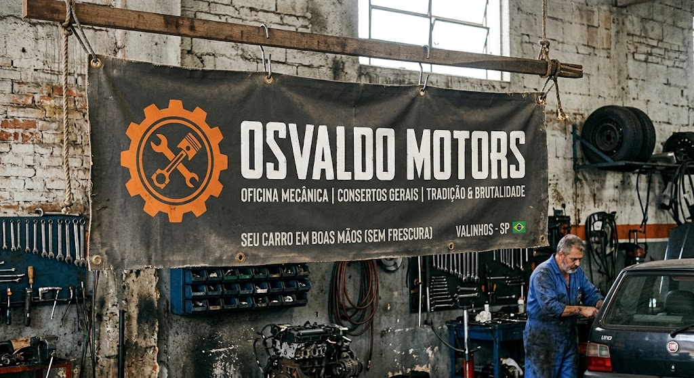
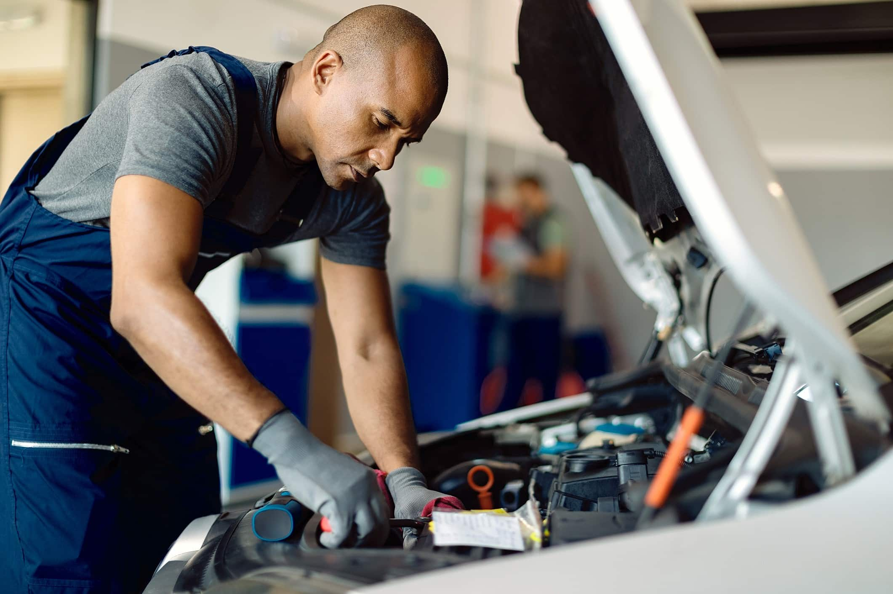
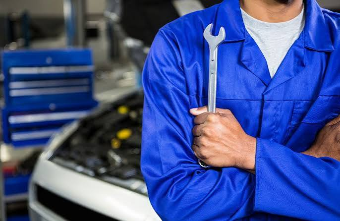

Troca de óleo e filtros
Substituição do óleo do motor, filtro de óleo, filtro de ar e filtro de combustível.

Conheça nossos
Substituição do óleo do motor, filtro de óleo, filtro de ar e filtro de combustível.

Troca do fluido do radiador, verificação de mangueiras, bomba d'água e termostato.
Troca de pastilhas, discos, lonas, fluído de freio e regulagem do freio de mão.
Manutenção em caixas de marcha manuais ou automáticas e troca do fluido de transmissão.

Teste e troca de bateria, alternador, motor de partida e iluminação.
Inspeção de dezenas de itens antes de viagens ou na compra de um carro usado.